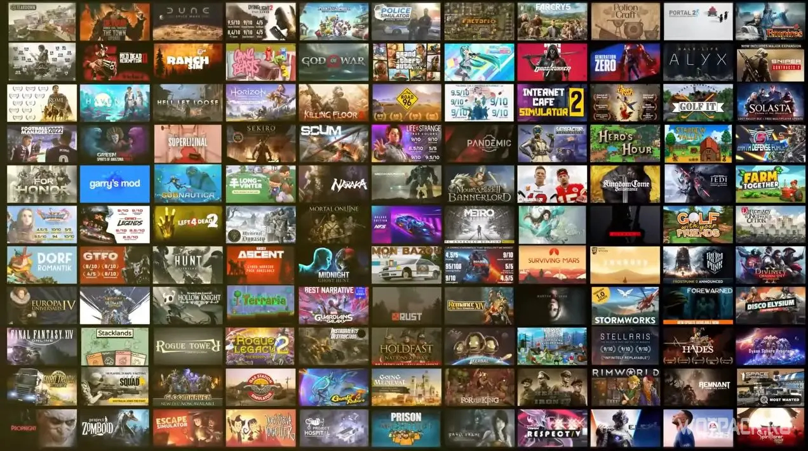
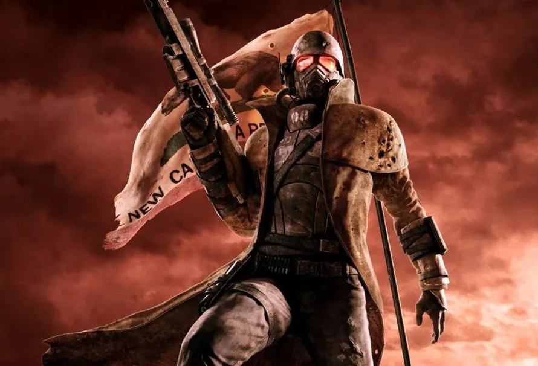

Топ 5 ігор в які треба зіграти кожному
Кожний геймер стикається з проблемой - у що пограти? Існує нескінченно велика кількість ігор, в які можна влетіти, але
їх так багато, що бажання щось шукати одразу зникає.

Тому для такої проблеми існує цей топ
Тут ми розповімо про 5 ігор, які на нашу думку мають бути пройдені кожним.
Цей топ являється суб'єктивною думкою і одна із ігор може бути найгіршим у що ви грали у своєму житті. Або ваша улюблена
гра може не потрапити у цей топ, тому ставимося до цього - як до поради. Так само, ігри не розташовані від гіршої до
найкращої, це просто перелік. Ну а тепер, ми можемо почати.

Fallout: New Vegas
Першою грою в нашому топі буде вже классична рпг Fallout: New Vegas
Була створена Obsidian Entertainment під видавництвом Bethesda Game Studios.
Після не дуже вдалої в геймплейному, але
успішною у фінансовому плані Fallout 3, Bethesda почала роботу над The Elder Scrolls
V: Skyrim. Але щоб не втрачати час,
Bethesda залучає Obsidian
Entertainment, до створення нової частини Fallout.
Ці ж самі люди, створили найкращу рпг всіх часів Fallout 2, яка досі вважається найкращою у фанатів. Це була
нова, ніяк
не пов'язана із сюжетом інших ігор частина, що відкривало багато можливостей. Розробка гри була розпочата у лютому
2009
року, анонсована 20 липня 2010 року, та вийшла на прилавки 19 жовтня 2010 року.
Сюжет
Головний герой — кур'єр, який працює у фірмі "Мохавський Експресс", доставляючи чергову посилку (Платинову Фішку Для Казино), потрапляє в засідку Великих Ханів під керівництвом Бенні і вже без посилки залишається вмирати в неглибокій могилі. Там його знаходить і відкопує робот-сек'юрітрон Віктор, після чого відносить героя до містечка Гудспрінгс домісцевого доктора Мітчелла. Док виліковує героя, проводить пару опитувань і тестів, дарує йому Pip-Boy, віддає костюм мешканця притулку, повертає спорядження та зброю та відправляє до Пустоші з незначними настановами. Одне з першочерговихзавдань головного героя - дізнатися, навіщо потрібна ця платинова фішка і хто намагався його вбити.
Геймплей
Fallout 3 не сподобалася давнім фанатам, через те, що гра перетворилася із варіативного та цікавого рпг в середньої якості шутер с дуже дивною поведінкою зброї. Нові фанати, напроти говорили, що нікому не потрібно ізометричне застарілерпг для 2.5 фанатів. Obsidian Entertainment знайшла компромісс. Вони використовували той же "ігровий двигун" що і Fallout 3, і залишили шутер складову з новою системою V.A.T.S, але на передній план, вони поставили рпг складову, та вариативність проходження. Тепер квести можна проходити багатьма способами, що буде впливати на зовнішній світ. Головний герой тепер може приєднуватися до різних фракцій, як наприклад Легіон Цезаря, або НКР.

Трилогія Mass Effect
Наступна в нашому топі, не менш класична серія ігор: Mass Effect
Була створена BioWare під видавництвом Microsoft та пізніше Electronic Arts. Розробці гри передував великий успіх Star Wars: Knights of the Old Republic у 2003 році. Тим часом Microsoft мала намір підвищити продаж своєї ігрової приставки
XBOX випуском для неї ексклюзивної гри-бестселера; для цього компанія зробила ставку на розробників BioWare, які повинні
були придумати з нуля новий всесвіт космічної опери для майбутньої гри, зробивши особливий акцент на якісній графіці та
численних діалогах, що роблять гру схожою на цифрове кіно.
Сюжет
У XXII столітті людство освоїло технології надсвітлових польотів, у тому числі винесений у назву гри ефект маси, і
вступило в контакт із позаземними цивілізаціями. Головний герой чи героїня гри, Капітан Шепард, стає Спектром -
спеціальним агентом на службі міжзоряної ради Цитаделі - і разом із групою соратників, як землян, так і інопланетян,
відвідує різні області та зоряні системи Чумацького Шляху. У ході сюжету гри Шепард та члени його (її) екіпажу,
переслідуючи зрадника Сарена, стикаються із справжньою загрозою для галактики - Жнецами.
Геймплей
Перед початком гри вибирається ім'я персонажа, стать, зовнішність, один із кількох варіантів передісторії, а також клас.
Для вибору є шість класів, кожен з яких має на увазі свій стиль ведення бою і дозволяє використовувати певні типи зброї.
На планетах і космічних станціях гравець виконує наземні операції, виконує бойові завдання, квести та взаємодіє з
неігровими персонажами, деякі зустрінуті люди та інопланетяни приєднуються до загону, командиром якого є Шепард, стаючи
таким чином ігровими. Крім того, виконуючи місії, загін отримує нові рівні, які необхідні для розвитку здібностей,
бойових навичок та поповнення інвентарю.
Сюжет
Сюжетна кампанія Doom Eternal продовжує сюжет гри Doom 2016. Через два роки після подій, що відбулися на Марсі, Земля
майже повністю захоплена демонічними силами, а людські втрати обчислюються мільярдами. За цей час Палач Року опановує
космічну фортецю, яку він використовує як власний штаб. На момент подій гри Палач планує знищення Культа Деаг - трьох
жерців, які керують вторгненням демонів на Землю: Деага Нілокса, Деага Ранака та Деага Грава. Першим він простежує
Нілокса, який знаходиться в Пекельній Баржі; діставшись Нілокса, Палач відрубує йому голову. Головний герой використовує
голову жерця, щоб потрапити на збори культу і залякати членів, що залишилися, які заявляють, що всі люди за свої діяння
повинні бути принесені в жертву Кан Творці — лідеру могутньої раси Творців. Побоюючись за життя Деагів, Кан Творець
телепортує їх у невідомі локації та попереджає Палача про наслідки його дій.
Геймплей
Гра розділена на окремі рівні, дизайн яких поєднує у собі науково-фантастичну та фентезійну тематику. Крім стандартної
механіки переміщення за рівнем, гравець може дертися по деяких стінах, робити ривки в сторони, притягуватися до
супротивників за допомогою гака і так далі. На рівнях також присутні різні предмети, такі як аптечки, патрони, броня,
покращення зброї та колекційні предмети, які представлені музичними композиціями з минулих ігор ID Software та ігор
серії Doom, віртуальними колекційними фігурками, чит-кодами та різними текстовими нотатками, що присвячені
внутриігровому всесвіту ігри. Між проходженням окремих місій гравець може вільно дослідити локацію-хаб, в якій він
може взаємодіяти із зібраними колекційними предметами, розблокувати нагороди, випробувати зброю та нові тактики на
тренувальній арені, а також вибрати рівень для повторного проходження. Як і в минулих іграх серії, перед початком гри
користувачеві дається вибір із чотирьох рівнів складності.
Сюжет
Події відбуваються в Зоні, альтернативній версії зони відчуження Чорнобильської АЕС. Після аварії, в Зоні відчуження
було створено лабораторії, що дозволили вченим проводити експерименти з екстрасенсорними здатностями. Їх експерименти
призвели до другої катастрофи, що викликала фізичні та метеорологічні явища по всій Зоні, а також мутації флори та
фауни. Зона всіяна аномаліями — незбагненними явищами, які не вкладаються в межі фізики, а іноді й здорового глузду
(вогненні стовпи, розсипи блискавок, вихори, що розривають, все що в них потрапить).
Аномалії породжують «артефакти» — предмети з особливими властивостями, такими як антигравітація або поглинання
радіоактивності. Люди, відомі як сталкери, проникають на територію Зони в пошуках таких предметів для власного
збагачення. Не дивлячись на те, що велика кількість сталкерів працює самостійно, Зону населяють різноманітні фракції,
кожна зі своєю філософією та метою. Фракція «Долг» вважає, що Зона є найбільшою загрозою людству та понад усе прагне її
знищити. На противагу, фракція «Воля» вважає, що Зона має бути доступна кожному.
Збройними Силами України було створено оточення навколо Зони, спрямоване на попередження несанкціонованого проникнення.
Крім того, підрозділи українського спецназу регулярно проводять у межах Зони спеціальні операції, такі як точкові удари
по сталкерам або забезпечення безпеки певних об'єктів. Серед ворожих створінь Зони, найнебезпечніші — люди та мутанти,
багато з яких володіють агресивними псіонічними здібностями.
У кожного з протагоністів ігор своя мета, що не завжди збігається з іншими фракціями. Та їм доведеться допомагати один
одному. Традиційно, головне завдання кожної гри — досягти центру Зони, та наперепоні стають різноманітні загрози та
небезпеки, створені нею ж.
Геймплей
Геймлей у игри не дуже замисловий, але не менш цікавий. Це, як було сказано вище - шутер з елементами Survival Horror,
де вам треба виконувати квести і потроху покращувати своє озброєння. Голоною фішкою ігри - є штучний інтелект NPC.
Завдяки ньому, відбувається дуже багато цікавих, а іноді і смішних подій пов'язаних з ними. Завдяки цьому ШІ, гру можна
перепроходити багато разів, і кожен раз бачити щось нове.

Dishonored
Далі, в нас легенда стелс ігор - Dishonored.
Була створена Arkane Studios, під видавництвом Bethesda Game Studios. Про створення Dishonored вперше було оголошено 7
липня 2011 року. Нова гра позиціонувалася як стелс-екшен із виглядом від першої особи. Планувалося одночасно випустити
гру на платформах Microsoft Windows, PlayStation 3 і XBOX 360. Dishonored - це перша гра від Arkane Studios, видана
Bethesda Softworks, яка є дочірньою компанією SeniMax Media, яка придбала Arkane Studios у серпні 2010 року. Креативними
директорами гри є засновник Arkane Studios Рафаель Калантоніо та розробник Deus Ex Харві Сміт, місце провідного
дизайнера зайняв Рікардо Бале. До розробки було залучено Віктора Антонова, який працював раніше над гейм-дизайном "Сіті 17" з гри "Half-Life 2". Команда складалася з двох відділів, що працюють у Ліоні у Франції та Остіні, штат Техас.
Сюжет
Після повернення з морської подорожі, метою якої був пошук допомоги у боротьбі з чумою, Корво Аттано прямує до Вежі Дануолла, де зустрічається з імператрицею. Після передачі повідомлення, вони зазнають нападу вбивць на чолі з Даудом,
які, нейтралізувавши Корво, вбивають імператрицю та викрадають її дочку. Наближені імператриці застигають Корво біля
закривавленого трупа, і звинувативши його, кидають у темницю. Минуло шість місяців. Наближені імператриці повністю
захопили контроль над Дануоллом. За день до того, як Корво мали стратити, він виявляє у своїй камері лист, ключ і меч,
залишені підкупленим офіцером за сприяння лоялістів. Корво втікає і знаходить у призначеному місці човняра Самуеля, який
відвозить його в Паб "Собача Яма", де той зустрічається з лідерами змови лоялістів.
Геймплей
Dishonored є пригодницьким екшеном з виглядом від першої особи, акцент в якому зроблений на потайному проходженні гри. В
ігровому світі розташовані різні локації, де гравець, використовуючи різні пристосування та вміння головного героя, може
у різний спосіб виконати завдання, поставлене на початку місії. У проміжку між основними місіями гравець повертається на
центральну локацію під назвою Паб "Собача Яма", де він може поспілкуватися з деякими персонажами та дізнатися про
деталі майбутньої місії, альтернативні шляхи проходження, додаткові завдання, а також купити спорядження та
модернізувати арсенал. Наприклад, надається можливість розширити технічні можливості маски або покращити якісні
характеристики зброї.